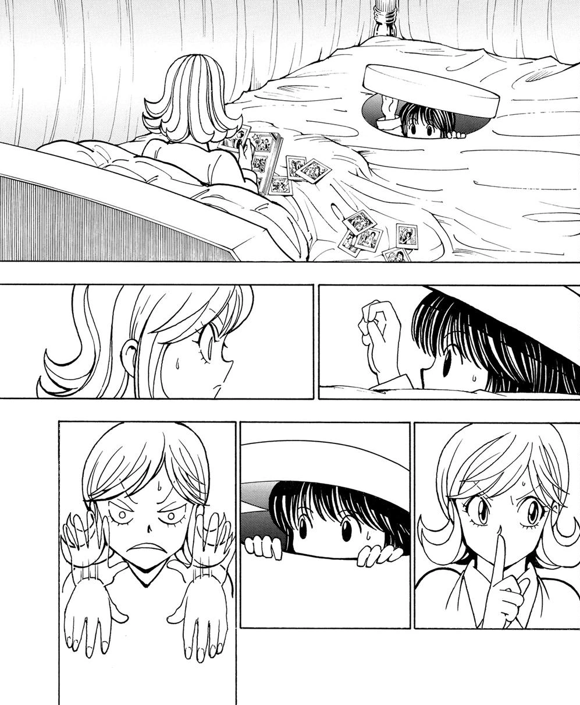
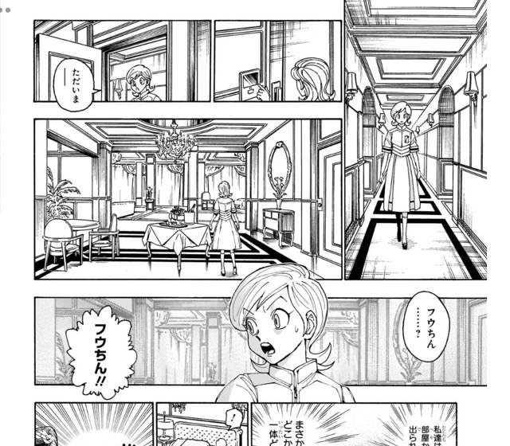

第11王子 フウゲツ
- 登録名
- フウゲツ＝ホイコーロ
- 分類
- 王子
- 初期配置（現在地ではありません）
- 第1層 1011号室
初期配置は台帳の当初の担当先です。後任の人物や復元枠も含み、全員の出航時の在室を示すものではありません。後の展開は下の折りたたみにまとめています。
人物詳細（後の展開を含む）
- 状態
- 存命（船内に留まる。継承戦から離脱はしていない）（第383話時点）
- 所属
- カキン王国
- 母（王妃）
- 第六王妃セイコ
- 最後の所在
最後に登場した場面：第383話（場所は推定：救命艇から第1層 1011号室へ）
場所を確認できた最後の記録：第383話 船外への出口・救命艇
ほかの関係記録（本人の在室は未確認）
- 第400話 司法局内（重要参考人の部屋と廊下。部屋名の明示なし）
- 念使用の確認
- 念使用：未確認（使用不可とは限りません）
- 念系統
- 未確認
- 念能力
- 本人固有の能力は未確認
- 守護霊獣
- 秘密の扉（マジカルワーム）
家族関係
- [親子] 第6王妃 セイコ（母）
守護霊獣：秘密の扉（マジカルワーム）
- 外見・形態
- ワーム（虫）状の生物。カチョウの念獣と対になっている双子協力型
- 守護霊獣の念系統
- 未確認
- 念能力
- 秘密の扉（マジカルワーム）：空間をつなぐ往復の扉。往路をフウゲツ、復路をカチョウが担当する。
- 第383話の救命艇による船外脱出は阻まれ、フウゲツは復路の扉で船内へ戻った。継承戦からの離脱に成功したという意味ではない。
第383話（原作確認記録あり） ／ 第400話（原作確認記録あり）


状態の経緯
- 第383話：存命（船内に留まる。継承戦から離脱はしていない） — 救命艇での脱出を試みるも『無数の手』に阻まれ失敗。カチョウが犠牲となった後、マジカルワームの復路（カチョウ担当分）で扉の通路を通って船内の部屋に戻り生還（部屋番号は第383話の画像に表示なし）（原作確認記録あり） 根拠の出来事
編集状況
- 人物ID：P11
- 状態の確認話数：第383話／根拠の出来事：E383-006（原作確認記録あり）
- 公開データの登録情報から生成したページです。個人メモ・編集内容・調査記録は含めません。
- 一覧の詳細でメモ・編集
情報源：公開人物台帳・公開出来事台帳。